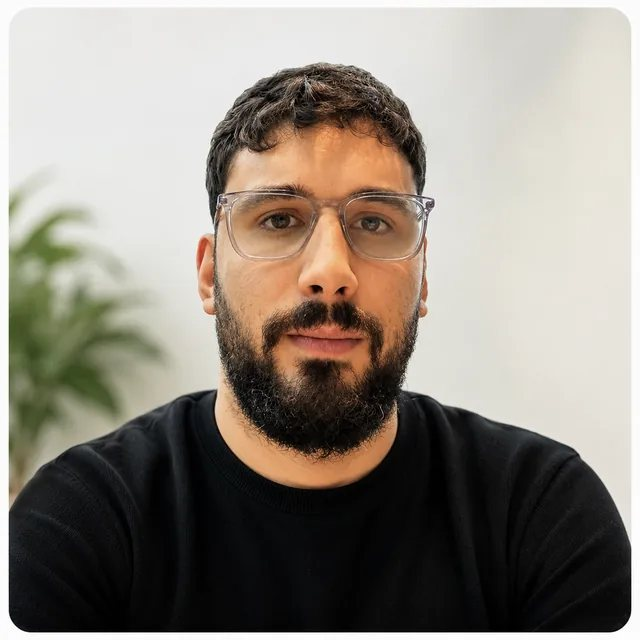
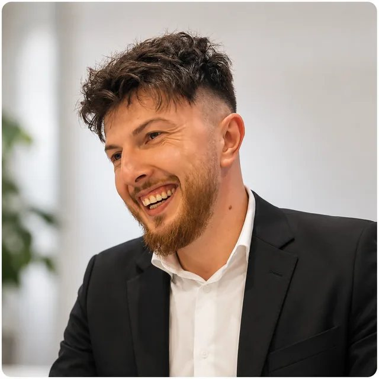
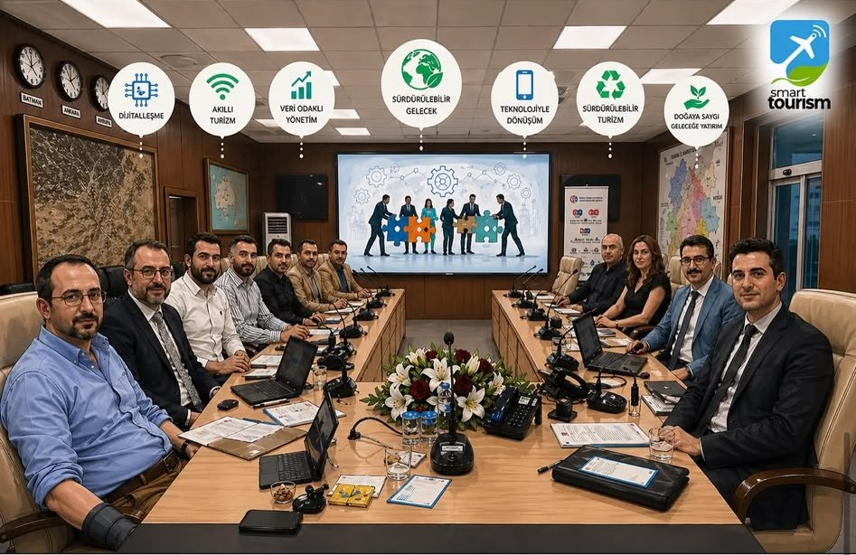

Éducation
Accompagnement et soutien éducatif.
Brussels Education & Development
À Bruxelles, BRED relie éducation, inclusion, coopération européenne et STEM pour accompagner les jeunes et les communautés.


Accompagnement et soutien éducatif.
Diversité et égalité des chances.
Erasmus+, coopération et mobilité.
Science, technologie et innovation.
Notre mission
BRED développe des actions qui rapprochent l’éducation, l’inclusion et l’innovation au service des jeunes et des communautés.
À Bruxelles comme dans les dynamiques européennes, l’organisation favorise l’apprentissage, le dialogue interculturel, la mobilité et le développement personnel et professionnel.
Explorer nos champs d’actionNos champs d’action
Des approches complémentaires pour accompagner, connecter et donner les moyens d’agir.
Soutien, accompagnement et développement des compétences pour favoriser des parcours éducatifs ouverts.
Diversité, égalité des chances et engagement auprès de communautés sous-représentées.
Projets Erasmus+, coopération internationale et mobilité au service de l’apprentissage.
Sciences, technologies, innovation et littératie numérique auprès des jeunes.
Nos projets
BRED développe et accompagne des projets qui relient éducation, inclusion, coopération européenne et innovation.
Découvrir nos projets
L’équipe BRED
Éducation, inclusion, projets européens et STEM se rencontrent au sein d’une direction engagée.
Découvrir toute l’équipeDirecteur
Directeur D&I & Community
Directeur EU Projects
Directeur IT & STEM
Construisons la suite
Échangeons autour de l’éducation, de l’inclusion, des projets européens ou des STEM.
Écrire à BRED